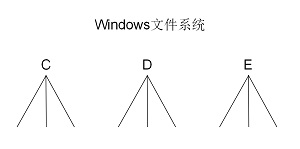
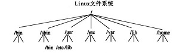

2. 文件与目录¶
2.1. Linux的文件系统¶
众所周知，我们刚买回来的硬盘，一般是完全空白的，里面不存在任何文件。这种状态下的新硬盘，必须经过格式化成某种文件系统才能使用。所谓文件系统，就是指磁盘里面文件的组织存放格式。依据这套格式，计算机读取硬盘的时候，就能分辨出哪里是文件的开头，哪里又是文件的结尾。通常文件系统的实现都是非常复杂的，涉及许多文件存取策略和地址转换表。这部分内容不在我们的讨论范围内，有兴趣的读者可自行查阅相关资料。
用过Windows磁盘格式化工具的读者，一定很熟悉下面的这个界面：

“文件系统”下拉框里列出了NTFS、FAT32和exFAT三种文件格式。这些文件系统格式在Windows下非常常见，NTFS如今已成为Windows的默认文件系统格式。
Linux与Windows不同的地方在于，Linux虽然支持Windows下的各个文件系统，但Linux一定是依赖一种称为Ext的文件系统格式。如同Win7的系统盘（C盘）一定要NTFS格式一样，Linux的 系统盘 （这个说法其实并不正确，但我们这里先这样称呼）也必须是Ext格式。
警告
这个情况正在改观。Ext3文件系统为大多数Linux发行版默认使用的文件系统。除了Ext3文件系统外，有些Linux发行版例如SuSE默认的文件系统为reiserFS。
早期的Linux使用Ext2格式，目前的Linux都使用了Ext3或Ext4。
注解
Ext2存取文件的性能极好，对于中小型的文件优势更为明显。但是，随着早期Linux系统在关键业务中的应用，Ext2文件系统的弱点也渐渐显露出来了。因为Ext2文件系统是非日志文件系统，当计算机遇到突发事件宕机或突然断电的情况时，磁盘数据极其容易损坏。这在关键行业的应用是一个致命的弱点。
Ext3文件系统是直接从Ext2文件系统发展而来，Ext3文件系统带有日志功能，可以跟踪记录文件系统的变化，并将变化内容写入日志。写操作首先是对日志记录文件进行操作，若整个写操作由于某种原因(如系统掉电)而中断，系统重启时，会根据日志记录来恢复中断前的写操作，而且这个过程费时极短。目前Ext3文件系统已经非常稳定可靠。它完全兼容Ext2文件系统。用户可以平滑地过渡到一个日志功能健全的文件系统中来。这实际上了也是ext3日志文件系统初始设计的初衷。
Linux文件系统在windows中是不能识别的。若读者企图用Windows的磁盘管理工具查看Linux磁盘内容，它也只能被识别为“未格式化的区域”。但是在Linux系统中，通过一种叫做“挂载”操作，你可以存取几乎所有的Windows文件系统隔世，如MS-DOS，VFAT，FAT，BSD,NTFS等。
我们在使用Windows系统的时候，除了系统盘C盘，还会习惯性地把剩下的磁盘空间分为D盘、E盘、F盘等等。每个磁盘分区，Windows处理起来像若干棵倒挂的树：
<<<<<<< HEAD 对于Linux而言，它更像是只有一个C盘的Windows————所有的文件都被组织在 根目录 （用正斜杠 / 表示）下。
 =======对于Linux而言，它更像是只有一个C盘的Windows————所有的文件都被组织在 根目录 （用正斜杠 / 表示）下。
>>>>>>> parent of b64db56... 继续编写 文件与目录由于历史原因，根目录下每个文件夹都有它约定俗成的用途。这里把它们列举如下，但不做详细分析，因为每个目录的具体内容会在以后的章节中慢慢讲解。
- /bin 二进制可执行命令
- /dev 设备特殊文件
- /etc 系统管理和配置文件
- /etc/rc.d 启动的配置文件和脚本
- /home 用户主目录的基点，比如用户user的主目录就是 /home/user ，可以用 ~user 表示
- /lib 标准程序设计库，又叫动态链接共享库，作用类似windows里的.dll文件
- /sbin 系统管理命令，这里存放的是系统管理员使用的管理程序
- /tmp 公用的临时文件存储点
- /root 系统管理员的主目录（呵呵，特权阶级）
- /mnt 系统提供这个目录是让用户临时挂载其他的文件系统。
- /lost+found 这个目录平时是空的，系统非正常关机而留下“无家可归”的文件（windows下叫 ***.chk）就在这里
- /proc 虚拟的目录，是系统内存的映射。可直接访问这个目录来获取系统信息。
- /var 某些大文件的溢出区，比方说各种服务的日志文件
- /usr 最庞大的目录，要用到的应用程序和文件几乎都在这个目录。其中包含：
- /usr/bin 众多的应用程序
- /usr/sbin 超级用户的一些管理程序
- /usr/doc Linux文档
- /usr/include Linux下开发和编译应用程序所需要的头文件
- /usr/lib 常用的动态链接库和软件包的配置文件
- /usr/man 帮助文档
- /usr/src 源代码，Linux内核的源代码就放在/usr/src/Linux里
- /usr/local/bin 本地增加的命令
- /usr/local/lib 本地增加的库
/bin 、 /sbin 、 /usr/bin 、 /usr/local/bin 这些目录相当于Windows的 C:\Program Files ，存放各种各样的可执行文件。而 /home/user 这样的用户主目录，则类似于Windows的 C:\Users\user 用于存放用户相关的数据。
警告
并不是每个Linux系统根目录都与上面举例的一模一样，有些Linux发行版会根据自身特点自行增删一些目录。
2.2. Linux文件类型¶
在Windows下，我们经常能遇到若干类型的文件，如系统文件、只读文件、隐含文件等。Windows依靠文件的后缀名判断文件类型，如xxx.txt代表文本文件，xxx.exe代表可执行文件，xxx.jpg代表图片等。但在Linux下，后缀名的作用被忽略了，Linux不再依靠后缀名判断文件类型，而是依赖 文件头信息。可以理解为，无论是Windows还是Linux，真正的文件类型都被保存在文件头信息里面，后缀名只是文件名的一部分，不代表真正的文件类型。Linux采用了“最标准的方式”判断文件类型，因此，当读者在Linux下遇到一个可执行的 xxx.jpg文件时，就能理解了——Linux不在乎后缀名。
警告
Linux并非对所有的后缀名都忽视，这主要取决于应用程序。有些Linux下的应用程序也是依靠后缀名判断文件类型的。
Linux文件类型常见的有：普通文件、目录、字符设备文件、块设备文件、符号链接文件等。
- 普通文件
- 这没什么好解释的，就是普通文件，例如xxx.txt、xxx.jpg、xxx.pdf等。
- 目录
- 跟windows下的文件夹一个意思，只不过在Linux中叫做目录。
- 字符设备
- 串行端口的接口设备，例如键盘、鼠标等等。
- 块设备文件
- 通常用在网络数据连接，最常在 /var/run目录中看到这种文件类型。
套接口文件
- 符号链接文件
- 类似Windows的快捷方式。
命名管道文件